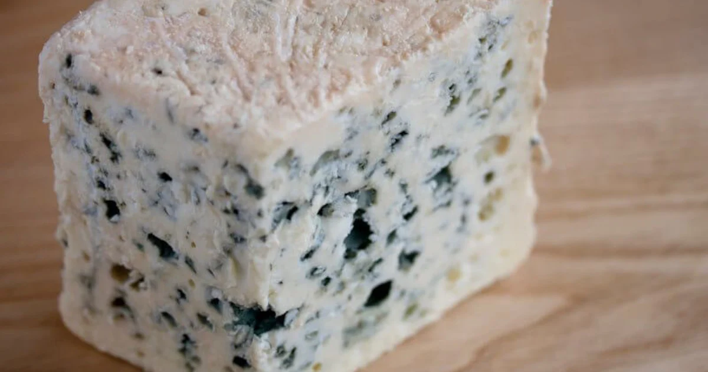

Blue Cheeses
Veined with Penicillium roqueforti, blue cheeses are pierced with needles so air reaches the interior and the blue mold can bloom along the channels.
Character: salty, sharp, and divisive. The paste ranges from creamy to crumbly; the veins carry a peppery, metallic tang that people either chase or flee.
Notable members: Roquefort, Gorgonzola, Stilton, and Cabrales.
How to enjoy: with something sweet — pears, honey, port. Blue cheese plus dessert wine is the oldest peace treaty in food.
Did you know? Roquefort must, by law, be aged in the natural caves of
Roquefort-sur-Soulzon in southern France. The same caves have been
used for over a thousand years.